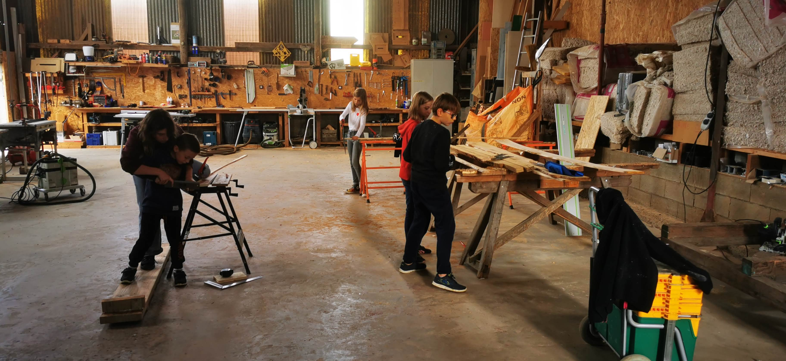
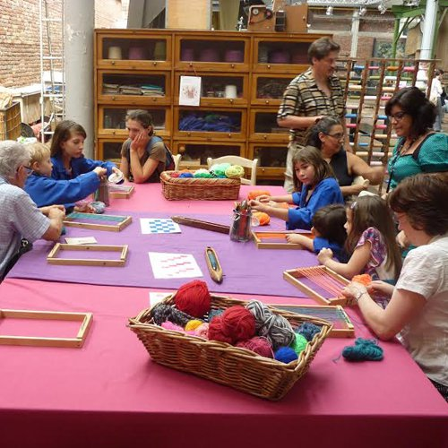
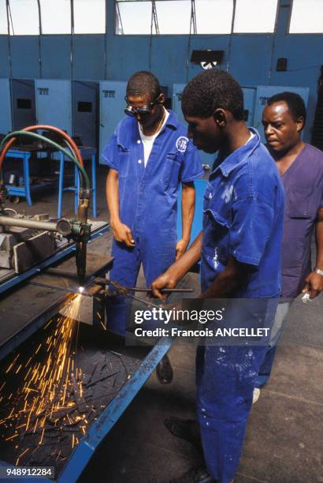
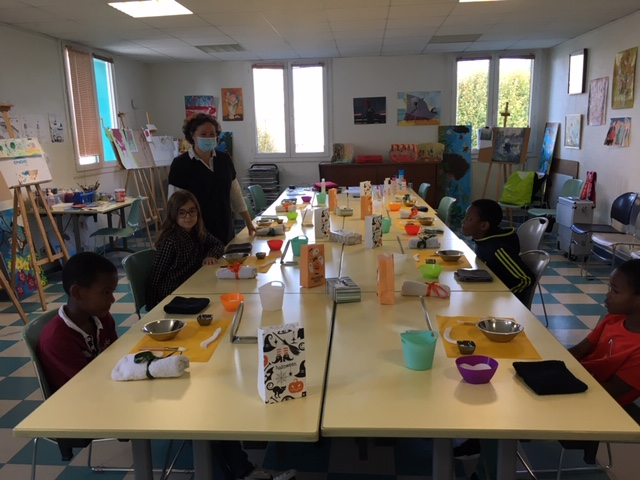
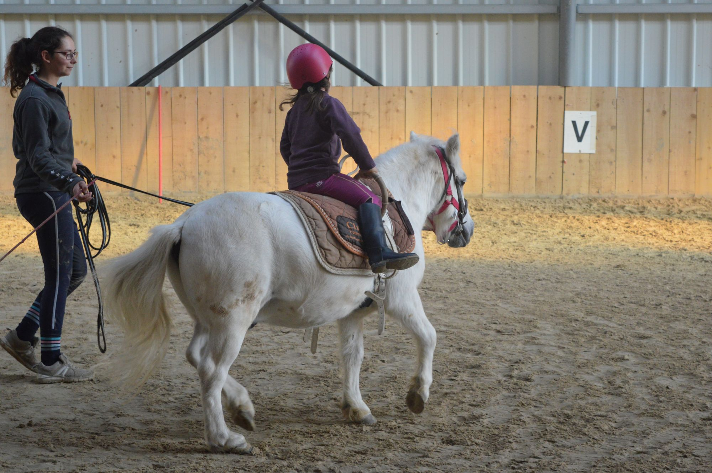

Actions
- Ateliers de menuiserie, couture, poterie
- Transmissions des savoir-faire traditionnels
- Événements et expositions locales
- Éducation pratique pour les jeunes
Mais, quels sont les métiers représentés dans les ateliers L'Outil en Main ?

BÂTIMENT
ENVIRONNEMENT
ART ET ARTS CRÉATIFS

TEXTILE ET CUIR

INDUSTRIE ET MÉTAL

ESTHÉTIQUE
DE BOUCHE

AUTRE